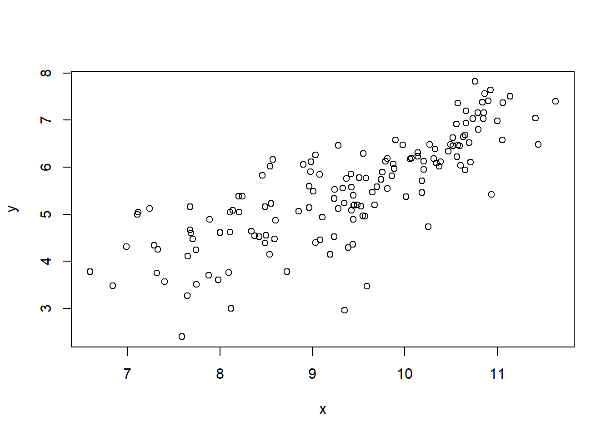
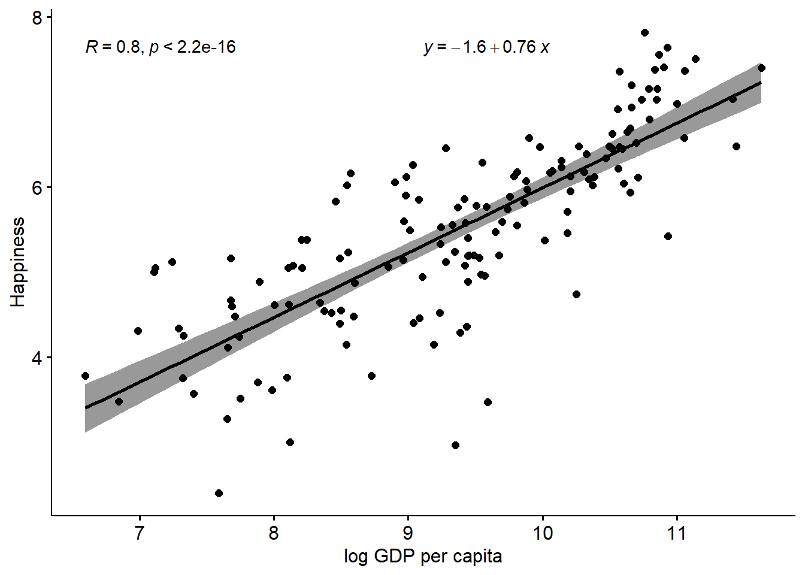
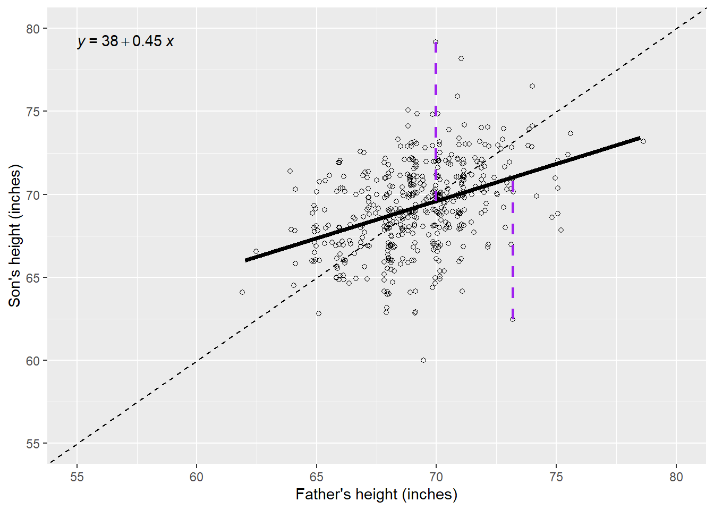
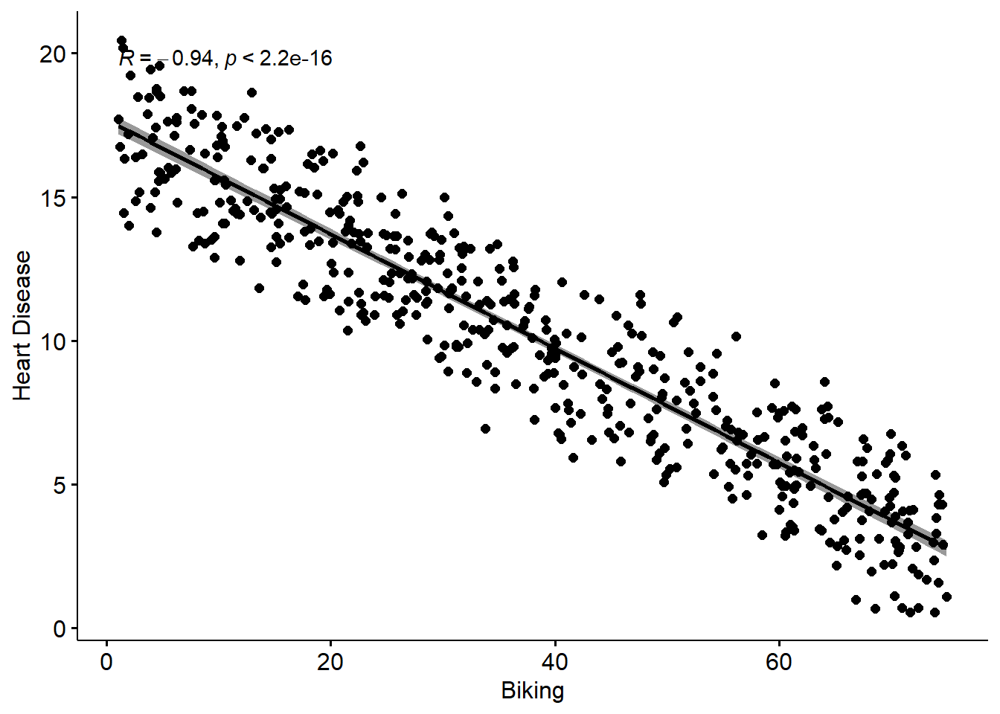

Chapter 3 Associations and Relationships
3.1 Correlations and Associations
First, let’s look at the basic concepts of correlation, using some more data from the World Happiness Report, and GDP from the World Bank, all put together by Our World in Data.
Remember, you will need to point the program to where the files are on YOUR computer.
Just double check the data by describing it. We’ve got 249 countries, with population, GDP per capita, and Happiness. There’s a fair bit of missing data, but that’s ok, as long as we are aware of it.
## vars n mean sd median trimmed mad
## Country* 1 249 125.00 72.02 125.00 125.00 91.92
## Happiness 2 153 5.49 1.12 5.53 5.52 1.16
## GDPpc 3 197 20463.88 20717.34 12655.00 17037.01 13338.95
## Pop 4 242 59178643.60 331869505.09 5596196.00 12318073.38 8185922.38
## min max range skew kurtosis se
## Country* 1.0 2.490000e+02 2.480000e+02 0.00 -1.21 4.56
## Happiness 2.4 7.820000e+00 5.420000e+00 -0.26 -0.38 0.09
## GDPpc 731.0 1.125570e+05 1.118260e+05 1.58 2.55 1476.05
## Pop 809.0 4.663087e+09 4.663086e+09 11.65 152.44 21333379.77Let’s run a basic scatterplot and see what happens.
Interpretation, there’s seemingly an association here. As one variable increases, the other does too.
Interestingly, I have chosen to put Happiness on the x-axis, which implies that the driver of GDP is happiness, whereas if you look at the media articles that are regularly written on this kind of topic, it is usually done the other way round, implying that the driver of happiness is GDP.
Nevertheless, while that’s an interesting little aside which might be worth thinking about some more, it’s important that you do NOT draw any causal conclusion from this very basic scatterplot, since there are many other things which could be going on. For example, there could be a spurious relationship - what could cause both happiness and GDPpc to increase?
Ideas? could it simply be ‘economic development of the country’, or ‘political stability’? Or something else?
Either way, let’s flip this around to more closely resemble figures that often appear using this (and similar) data in the media:

There we go, looks very like the figure on the slide from the Economist.
But this association also looks kind of nonlinear to me. There are multiple ways to look at this:
- there may be two groups of country, low and high income, and different linear associations within those groups.
- It could be a nonlinear relationship? In fact, you could check this out by transforming GDPpc. Here, I might judge that a log transform might work…let’s have a go..
Check it worked…
## vars n mean sd median trimmed mad
## Country* 1 249 125.00 72.02 125.00 125.00 91.92
## Happiness 2 153 5.49 1.12 5.53 5.52 1.16
## GDPpc 3 197 20463.88 20717.34 12655.00 17037.01 13338.95
## Pop 4 242 59178643.60 331869505.09 5596196.00 12318073.38 8185922.38
## GDPpc_log 5 197 9.38 1.14 9.45 9.41 1.33
## min max range skew kurtosis se
## Country* 1.00 2.490000e+02 2.480000e+02 0.00 -1.21 4.56
## Happiness 2.40 7.820000e+00 5.420000e+00 -0.26 -0.38 0.09
## GDPpc 731.00 1.125570e+05 1.118260e+05 1.58 2.55 1476.05
## Pop 809.00 4.663087e+09 4.663086e+09 11.65 152.44 21333379.77
## GDPpc_log 6.59 1.163000e+01 5.040000e+00 -0.25 -0.79 0.08Let’s rerun the plot…

That’s kind of cool.
Now, what we could do is look at the correlations for a slightly different way of interpreting the information.
Let’s pop back to the slide deck…
…
With that in mind, let’s take a quick look at the correlations for these variables.
##
## Pearson's product-moment correlation
##
## data: Happy$Happiness and Happy$GDPpc
## t = 13.502, df = 146, p-value < 2.2e-16
## alternative hypothesis: true correlation is not equal to 0
## 95 percent confidence interval:
## 0.6636288 0.8092331
## sample estimates:
## cor
## 0.745184##
## Pearson's product-moment correlation
##
## data: Happy$Happiness and Happy$GDPpc_log
## t = 15.916, df = 146, p-value < 2.2e-16
## alternative hypothesis: true correlation is not equal to 0
## 95 percent confidence interval:
## 0.7287785 0.8487456
## sample estimates:
## cor
## 0.7964703We can see that the association is stronger (the correlation is higher) for the log GDPpc variable, although to be honest, it is not a very big difference in this data, compared to other data sets discussed in the media. Interesting in itself (note we are using 2020 data, so maybe the pandemic has something to do with it?)
3.2 Regression
We can add a regression line to this scatterplot, for some extra information over the correlation

I might also decide to do this with the log GDPpc to see what happens.

So, this is an improvement, but not by that much in my view. That said, it’s clear that the line is a bit more accurate (the errors are lower which can be seen by the narrower shaded regions)
Either way, the regression line adds a layer of information on to the correlation, which allows us to predict y from x.
How so? Well, let’s add the regression equation to the chart to see:

This adds an intercept, and with that plus the coefficient we have all we need to plot a straight line, which we can extrapolate to higher values of GDPpc (although remember this is the logged GDP variable) and predict what the happiness scores would be.
This is obviously viable to the extent we can justify the relationship, and also within the parameters of our variables, and how confident we are that the relationship is consistent at all levels of the variables.
Let’s pop back to the slide deck again for a second…..
We can also use Spiegelhalter’s code to replicate his Figure 5.1 for our slide deck, and spend some time talking about it
## Family Father Mother Gender
## Length:898 Min. :62.00 Min. :58.00 Length:898
## Class :character 1st Qu.:68.00 1st Qu.:63.00 Class :character
## Mode :character Median :69.00 Median :64.00 Mode :character
## Mean :69.23 Mean :64.08
## 3rd Qu.:71.00 3rd Qu.:65.50
## Max. :78.50 Max. :70.50
## Height Kids
## Min. :56.00 Min. : 1.000
## 1st Qu.:64.00 1st Qu.: 4.000
## Median :66.50 Median : 6.000
## Mean :66.76 Mean : 6.136
## 3rd Qu.:69.70 3rd Qu.: 8.000
## Max. :79.00 Max. :15.000## [1] 197## Min. 1st Qu. Median Mean 3rd Qu. Max.
## 62.00 68.00 69.50 69.35 71.00 78.50## [1] 2.622034## [1] 197## Min. 1st Qu. Median Mean 3rd Qu. Max.
## 58.00 62.70 64.00 63.98 65.50 70.50## [1] 2.355607## [1] 465## Min. 1st Qu. Median Mean 3rd Qu. Max.
## 60.00 67.50 69.20 69.23 71.00 79.00## [1] 2.631594## [1] 433## Min. 1st Qu. Median Mean 3rd Qu. Max.
## 56.00 62.50 64.00 64.11 65.50 70.50## [1] 2.370323.2.1 Figure 5.1 (page 124) Linear regression of sons’ on fathers’ heights
##
## Call:
## lm(formula = Son ~ FatherS)
##
## Residuals:
## Min 1Q Median 3Q Max
## -9.3774 -1.4968 0.0181 1.6375 9.3987
##
## Coefficients:
## Estimate Std. Error t value Pr(>|t|)
## (Intercept) 38.25891 3.38663 11.30 <2e-16 ***
## FatherS 0.44775 0.04894 9.15 <2e-16 ***
## ---
## Signif. codes: 0 '***' 0.001 '**' 0.01 '*' 0.05 '.' 0.1 ' ' 1
##
## Residual standard error: 2.424 on 463 degrees of freedom
## Multiple R-squared: 0.1531, Adjusted R-squared: 0.1513
## F-statistic: 83.72 on 1 and 463 DF, p-value: < 2.2e-16##
## Pearson's product-moment correlation
##
## data: FatherS and Son
## t = 9.1498, df = 463, p-value < 2.2e-16
## alternative hypothesis: true correlation is not equal to 0
## 95 percent confidence interval:
## 0.3114667 0.4656805
## sample estimates:
## cor
## 0.3913174
Figure 5.1 Scatter of heights of 465 fathers and sons from Galton’s data (many fathers are repeated since they have multiple sons). A jitter has been added to separate the points, and the diagonal dashed line represents exact equality between son and father’s heights. The solid line is the standard ‘best-fit’ line. Each point gives rise to a ‘residual’ (dashed line), which is the size of the error were we to use the line to predict a son’s height from his father’s.
3.3 Multiple Regression
Here, we will use a simple three-variable set of simulated data, which represents rates of smoking, rates of cycling, and heart disease incidence. This data is available from: https://www.scribbr.com/statistics/linear-regression-in-r/
## vars n mean sd median trimmed mad min max range
## ...1 1 498 249.50 143.90 249.50 249.50 184.58 1.00 498.00 497.00
## biking 2 498 37.79 21.48 35.82 37.71 27.51 1.12 74.91 73.79
## smoking 3 498 15.44 8.29 15.81 15.47 10.86 0.53 29.95 29.42
## heart.disease 4 498 10.17 4.57 10.39 10.18 5.42 0.55 20.45 19.90
## skew kurtosis se
## ...1 0.00 -1.21 6.45
## biking 0.07 -1.22 0.96
## smoking -0.04 -1.12 0.37
## heart.disease -0.03 -0.93 0.20
OK, so these are simple regression lines, with bivariate scatterplots. What I mean, is the effect of biking on heart disease does not take account of the effect of smoking on heart disease. What we need to do is run a model which takes account of both the predictors.
Let’s pop back to the slides for a second…
Now we can run the Multiple Regression Model
##
## Call:
## lm(formula = heart.disease ~ biking + smoking, data = Heart)
##
## Residuals:
## Min 1Q Median 3Q Max
## -2.1789 -0.4463 0.0362 0.4422 1.9331
##
## Coefficients:
## Estimate Std. Error t value Pr(>|t|)
## (Intercept) 14.984658 0.080137 186.99 <2e-16 ***
## biking -0.200133 0.001366 -146.53 <2e-16 ***
## smoking 0.178334 0.003539 50.39 <2e-16 ***
## ---
## Signif. codes: 0 '***' 0.001 '**' 0.01 '*' 0.05 '.' 0.1 ' ' 1
##
## Residual standard error: 0.654 on 495 degrees of freedom
## Multiple R-squared: 0.9796, Adjusted R-squared: 0.9795
## F-statistic: 1.19e+04 on 2 and 495 DF, p-value: < 2.2e-16We can interpret these results just as we did the earlier simple regression results.
A 1 unit increase in biking will on average lead to a 0.2 unit decrease in heart disease A 1 unit increase in smoking will on average lead to a 0.17 unit increase in heart disease.
Of course, what these ‘units’ refer to depends on what you have measured them with of course. But, the unarguable interpretation is that the effect is strong.
However, because the scales of the variables are different, its not really possible to compare the sizes of the effects. So to some extent we don’t know which of the two variables has the ‘bigger’ effect here, relatively at least.
To do that, we need to standardize the coeffiecients, and to do that in R, we need to create a new set of standardized data, and run the model on that, as follows:
## vars n mean sd median trimmed mad min max range skew
## ...1 1 498 0 1 0.00 0 1.28 -1.73 1.73 3.45 0.00
## biking 2 498 0 1 -0.09 0 1.28 -1.71 1.73 3.43 0.07
## smoking 3 498 0 1 0.05 0 1.31 -1.80 1.75 3.55 -0.04
## heart.disease 4 498 0 1 0.05 0 1.19 -2.10 2.25 4.35 -0.03
## kurtosis se
## ...1 -1.21 0.04
## biking -1.22 0.04
## smoking -1.12 0.04
## heart.disease -0.93 0.04##
## Call:
## lm(formula = heart.disease ~ biking + smoking, data = std_Heart)
##
## Residuals:
## Min 1Q Median 3Q Max
## -0.47658 -0.09762 0.00792 0.09671 0.42283
##
## Coefficients:
## Estimate Std. Error t value Pr(>|t|)
## (Intercept) -6.119e-17 6.410e-03 0.00 1
## biking -9.403e-01 6.418e-03 -146.53 <2e-16 ***
## smoking 3.234e-01 6.418e-03 50.39 <2e-16 ***
## ---
## Signif. codes: 0 '***' 0.001 '**' 0.01 '*' 0.05 '.' 0.1 ' ' 1
##
## Residual standard error: 0.1431 on 495 degrees of freedom
## Multiple R-squared: 0.9796, Adjusted R-squared: 0.9795
## F-statistic: 1.19e+04 on 2 and 495 DF, p-value: < 2.2e-16You can see the things that have changes are the ‘Estimates’, which are now standardized.
In decimal, they are -0.94 for biking and 0.32 for Smoking.
The correct interpretation of these standardized effects is that for every 1SD increase in biking, you expect a 0.94SD decrease in heart disease, and for every 1SD increase in smoking, you would expect a 0.32 increase in heard disease.
So, we can see that actually smoking has a much higher relative effect on heart disease than smoking (although in the opposite direction). However, this assumes that both the two IVs have similar standard deviations, and distributions. Which, we didn’t check.
3.4 Visualizing Multiple Regression
There are loads of different ways to visualize multiple regression. It’s not trivial, because we have more than two variables, so we can’t use the techniques we used already.
Some people like to use 3D-style plots, which look cool, but are not always easy to interpret, and take quite a lot of extra work, for what I would say is not that much payoff (if any).
In this case, we can use a pretty simple visualization, where we could plot the relationship of biking to heart disease at different levels of smoking.
This would be a quite typical way to do things if we thought the relationship between biking and heart disease changed according to the level of smoking, in which case it would be a moderator. Here, it doesn’t really work that way, but it’s a cool visualization regardless. It does require some data prep, but not that much, and I took the basic idea from the website where I sourced the data: https://www.scribbr.com/statistics/linear-regression-in-r/
Here, we can see that the effect of smoking is really just to raise the likelihood of heart disease, however much biking you do.
So, for a given person who bikes a given amount, if they smoke more they will have a higher risk than a person who bikes the same amount but smokes less.
But, for a given smoker, the more they bike, the lower their risk of heart disease, to the extent that if a heavy smoker bikes enough, their actual risk of heart disease could even be lower than a non-smoker who does not bike at all.
Don’t forget, this is not real data, but the point stands.